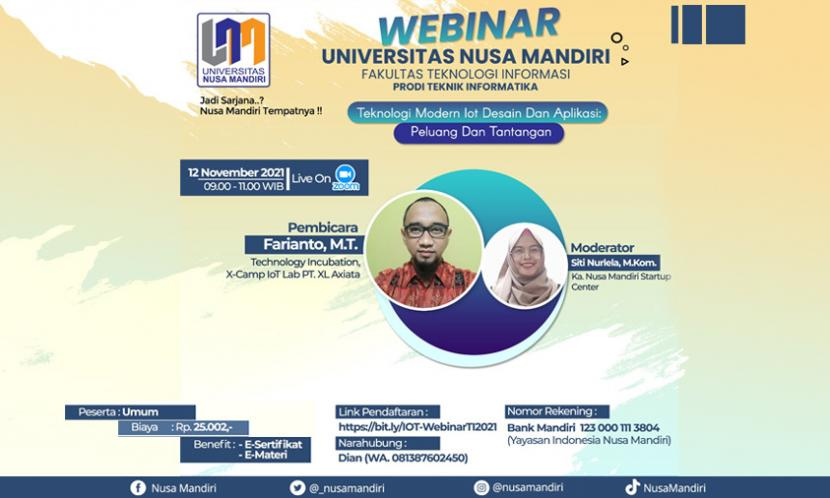

Deskripsi Event:

Siapkan diri untuk mencari peluang agar selalu siap hadapi tantangan perubahan. Caranya dengan membekali diri dengan wawasan dan pengetahuan lewat webinar yang diselenggarakan IOT Academy dengan tema “Teknologi Modern Iot Desain dan Aplikasi: Peluang dan Tantangan”.
IoT Desain dan Aplikasi
“Dengan ikut webinar ini, selain akan semakin pintar dalam menggunakan teknologi modern dan pastinya akan semakin cakap memanfaatkannya. Para peserta juga akan mendapatkan e-sertifikat dan e-materi,” kata Arfhan Prasetyo.
Ia menambahkan, untuk para peserta yang ingin semakin pintar dan bertambah wawasannya segera daftarkan diri melalui Website IOT Academy. Dan untuk informasi lebih lanjut dapat melalui narahubung Azra (08148320342).
“Teknologi IoT, penggunaannya saat ini, sudah merambah ke berbagai bidang. Untuk mengetahui lebih dalam lagi, tentang Internet of Thing, ayo ikut webinar prodi TI dan pasti akan semakin berwawasan juga siap menghadapi tantangan teknologi modern,” tutupnya.
22 November 2021
90 Peserta
32 November 2021
Online